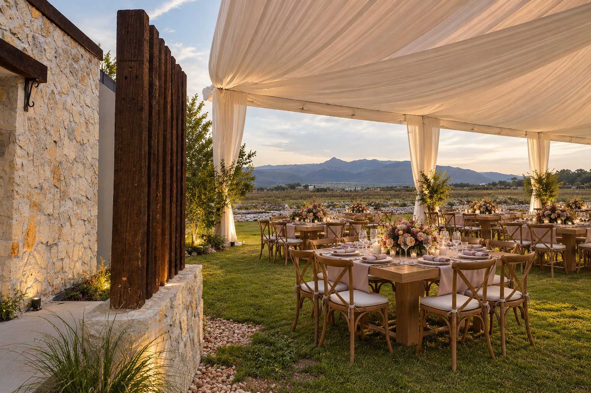
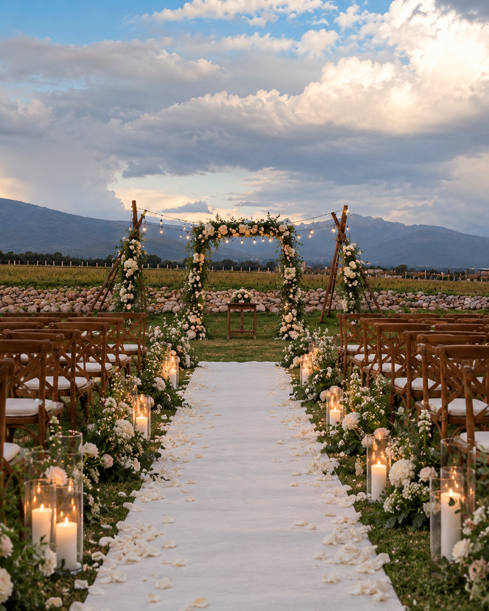
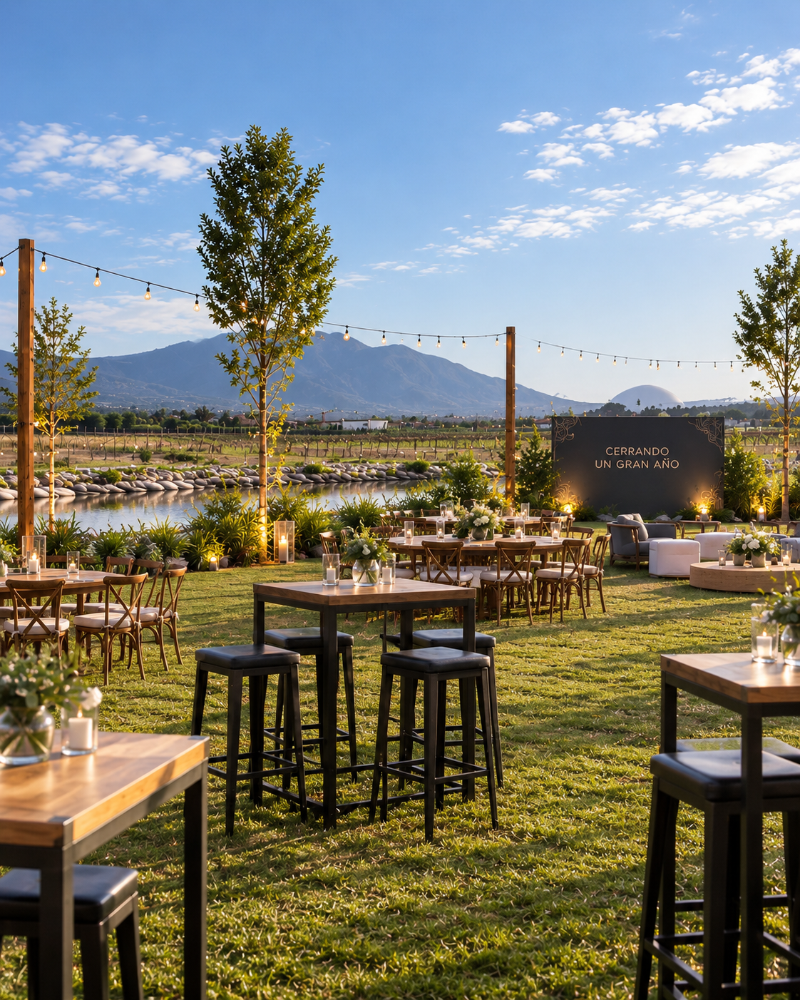
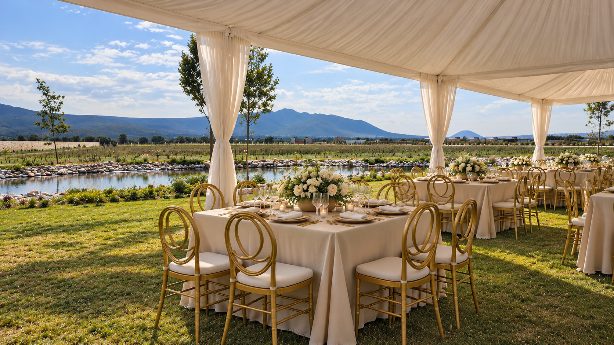
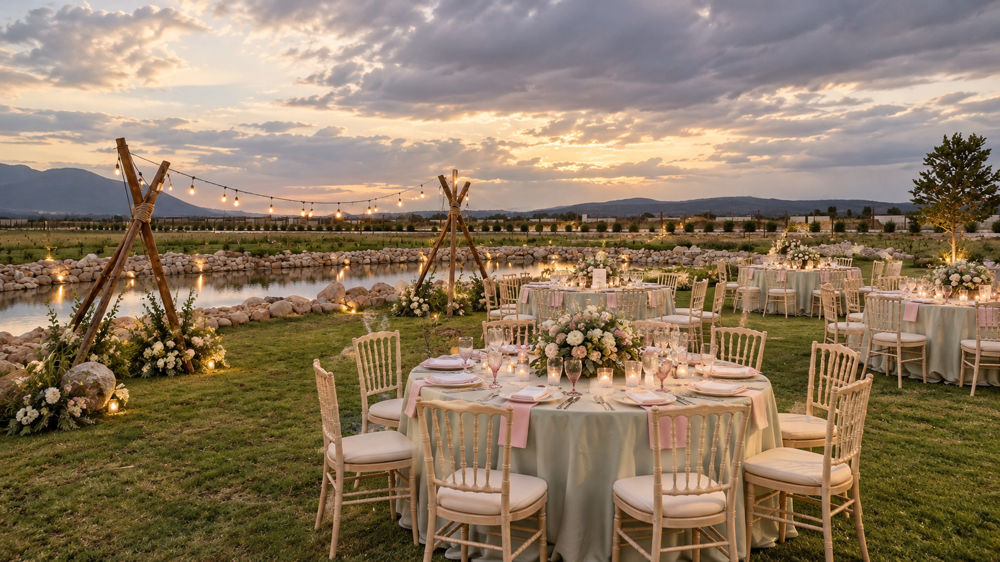
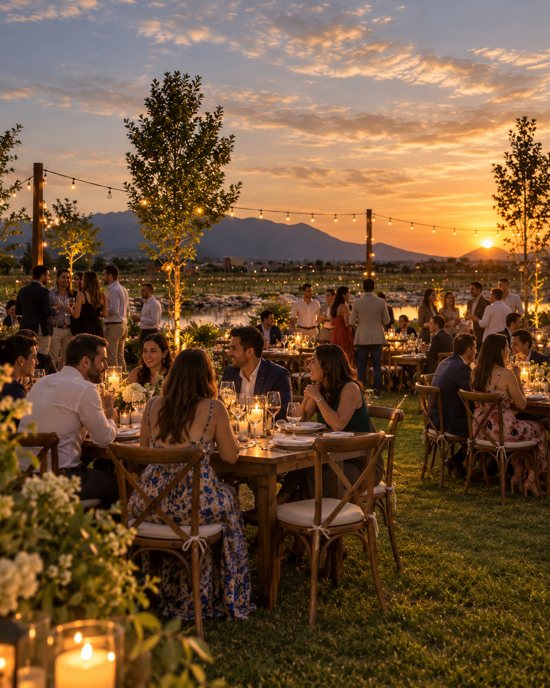
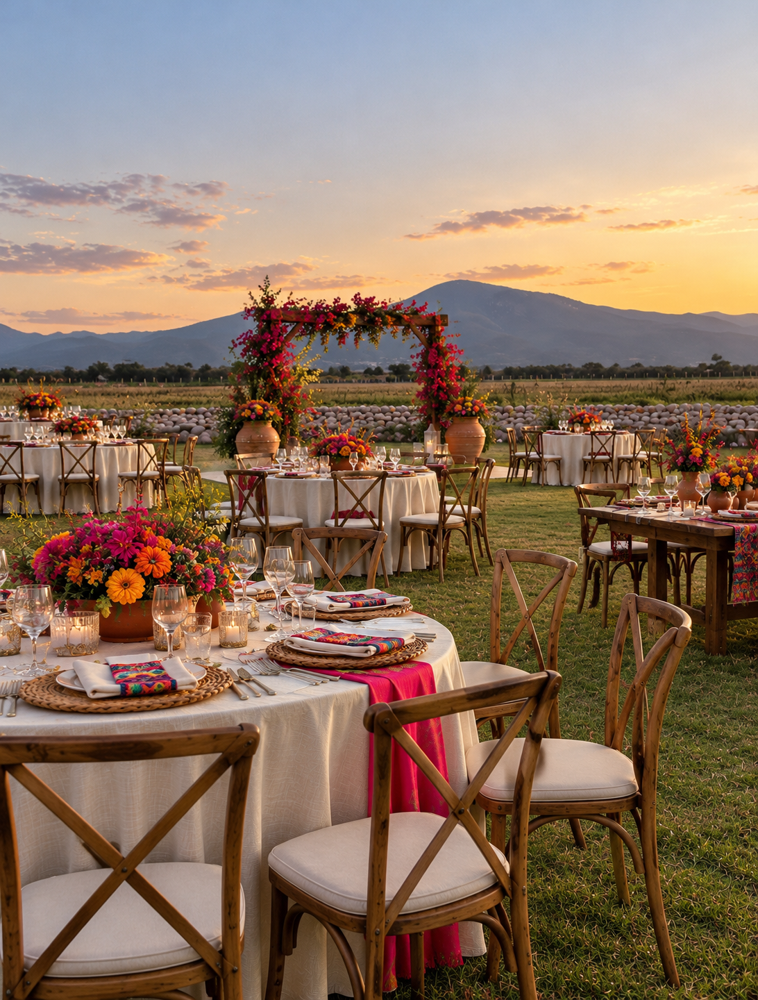
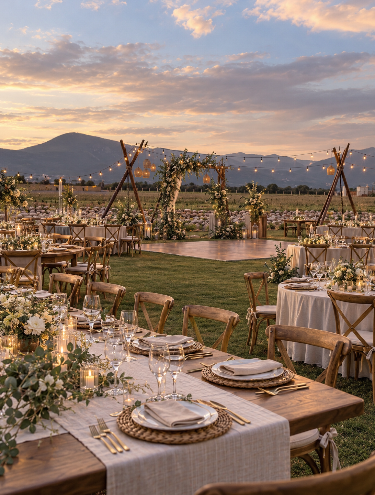

El espacio
Un lugar que se
adapta a tu historia.
En Mata de Uva, la naturaleza, la calidez del entorno y la arquitectura del lugar se unen para crear el escenario perfecto para tu celebración. Ya sea una boda, un evento corporativo o una reunión privada, aquí cada ocasión se vive de una manera especial.

Tipos de eventos
Bodas, celebraciones y encuentros especiales
Desde bodas hasta eventos empresariales, celebraciones familiares y sesiones fotográficas. El viñedo se adapta a lo que imaginas.
Eventos corporativos
Encuentros
que inspiran
Reuniones, lanzamientos, cenas de empresa y más. El entorno natural y la tranquilidad del viñedo crean el ambiente ideal para fortalecer equipos, generar nuevas ideas y celebrar los logros.




Bodas
El lugar perfecto
para decir “sí”
Rodeados de viñedos, naturaleza y un cielo incomparable, Mata de Uva ofrece un escenario único para celebrar el inicio de una nueva historia. Cada boda se planea de manera personalizada, en conjunto con una wedding planner, para que cada detalle refleje su esencia.
Celebraciones privadas
Porque cada ocasión
merece un lugar especial
Cumpleaños, aniversarios, reuniones familiares o cualquier celebración importante. En Mata de Uva encontrarás un espacio versátil, rodeado de naturaleza, que se adapta a tus necesidades y hace de cada momento algo único.

Tu evento, a tu medida
Nos adaptamos a ti
Podemos ayudarte a desarrollar una propuesta personalizada para que tu evento sea exactamente como lo imaginas.


Imágenes ilustrativas. Los montajes y elementos decorativos son propuestas de inspiración y están sujetos a disponibilidad y cotización.